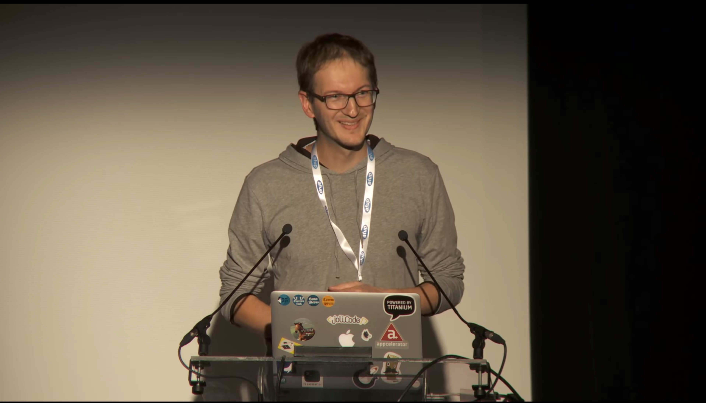
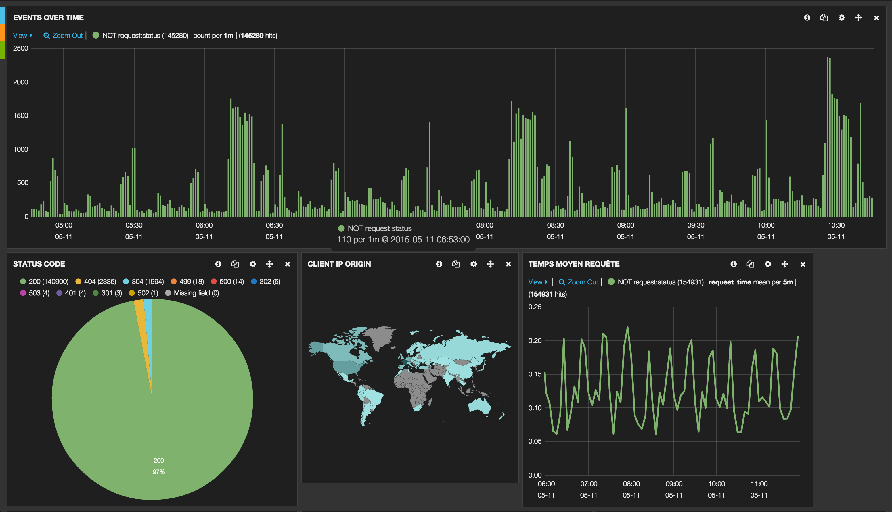

Projet : portail partenaire

PHP Tour Luxembourg - Lenclos Thibault - 2015
PHP Tour Luxembourg - Thibault Lenclos - 2014
Dév web et mobile @jolicode
PHP (Symfony 2), JS full stack (node, meteor), mobile (titanium)
Rock & code
ARTE GEIE, basé à Strasbourg
Chaine de télévision franco-allemande
Nombreuses plateformes (TV, web, mobile, HBBTV…)
François Dume (conférence forum PHP) et Matthieu Breen.
Nouvelle API Rest, données unifiées
OAuth 2
Proxy Nginx + scripts Lua (rate limit et authentification)
Portail partenaire
Stand-up chaque matin
Priorisation des tâches
“Fix bug first”
Mise en production hebdomadaire
Communication chat et VOIP

Github : Pull request et revue de code
Jira : gestion de tickets
Bamboo : intégration continue
Hipchat : chat + notifications diverses (PR, déploiement, fail des tests)
Digital ocean : création de VM à la volée
Même environnement pour tous :

Nginx + modules
Etendre le serveur avec des scripts
Interagir avec des bases de données (ex: cache redis)
Sous requêtes
Langage
Typage dynamique
Apprentissage rapide
Interviennent à différents moments de la requête
Testable via le package perl Test:Nginx
--- http_config
lua_shared_dict cache 10M;
--- config
location /test-401 {
header_filter_by_lua_file /etc/nginx/conf.d/oauth-header-filter.lua;
access_by_lua_file /etc/nginx/conf.d/oauth-throttle.lua;
}
--- request
GET /test-401
--- error_code: 401API : JSON API
Documentation : Swagger
Autres
JSON-LD : schéma et lien
Hydra : schéma et documentation directement dans la réponse
Basé sur le standard JSON Api :
semantic versionning (non défini dans le standard)
SF2 (WebTestCase)
Frisby JS (maintenu par Vance Lucas)
frisby.create('Check token generation')
.get(oauthTokenUrl)
.expectStatus(200)
.expectHeaderContains('content-type', 'application/json')
.afterJSON(function(json) {
var accessToken = json.access_token;
frisby.create('Check invalid token returns a 401')
.get(apiBaseUrl + '/api/videps?access_token=invalidToken')
.expectStatus(401)
.expectMaxResponseTime(maxResponseTimeExpected)
.toss();
});
Tsung => tests de stress
JMeter => tests de performance
Blackfire
REST
nelmio/api-doc-bundle
friendsofsymfony/rest-bundle
jms/serializer
arte/hateoas-bundle (POC)
TESTS
liip/functional-test-bundle
Utilisation d’un makefile pour certaines tâches de développement :
Merci Marmelab !
https://github.com/marmelab/make-docker-command
Description des paquets, fichiers de confs...
Exécution de tâches
Ex: relancer nginx avec mise à jour des scripts LUA
name: write the oauth-throttle.lua file for api-proxy
copy: src=oauth-throttle.lua dest=/etc/nginx/conf.d/oauth-throttle.lua backup=no
notify:
- restart nginx
tags:
- proxy-api
- nginxNew relic + logstash (gelf et syslog)

Presque !
Suppression des données sensibles
BFG repo cleaner
SDK pour les partenaires
Migration des clients utilisant l’ancienne version de l’API (PAPI)
PHP 7 - Elasticsearch
Premier projet @jolicode
Très formateur
Développement proche de l’architecture
Nouvelles méthodologies
Métier connu
Problématique de performance
Choix des outils